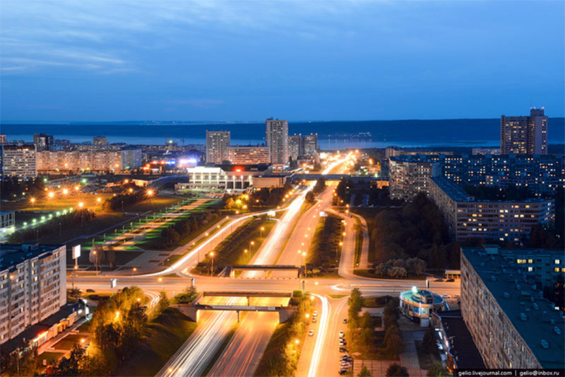

Заинский район и город Заинск
🏙 Город Заинск
📅 Основан в 1652 году как Заинский острог (крепость).
🏙 Статус города получил в 1978 году.
👥 Население города — около 40 тысяч человек.
📍 Расположение — на берегу реки Степной Зай, на юго-востоке Татарстана.
⚙️ Экономика
Заинск — важный промышленный центр Татарстана. Основные отрасли:
Энергетика — здесь находится Заинская ГРЭС (гидроэлектростанция), одна из крупнейших в республике.
Пищевая промышленность — молокозаводы, мясокомбинат, хлебозавод.
Машиностроение и строительство — предприятия по производству стройматериалов, бытовой техники и металлоконструкций.
Также развито сельское хозяйство: растениеводство и животноводство.
🧑🤝🧑 Население и культура
В районе живут татары, русские, чуваши, мордва и другие народы. Здесь развита система образования: школы, детсады, колледжи, музыкальные школы.
Культурная жизнь района насыщена: работают дома культуры, театральные коллективы, проводятся фестивали, национальные праздники — например, Сабантуй.
🏞 Природа и отдых
В районе много природных достопримечательностей:
Леса, озёра и реки — популярные места для рыбалки и отдыха.
Работают базы отдыха, санатории, детские лагеря.
В Заинске есть парки, скверы, фонтаны, стадионы и спорткомплексы.
🕌 Религия
На территории района находятся мечети, православные храмы и молельные дома других конфессий. Жители разных национальностей и вероисповеданий живут дружно.
🛣 Транспорт и связь
Через район проходят автодороги регионального значения. Развита сеть общественного транспорта, автобусное сообщение с другими районами Татарстана и соседними регионами.